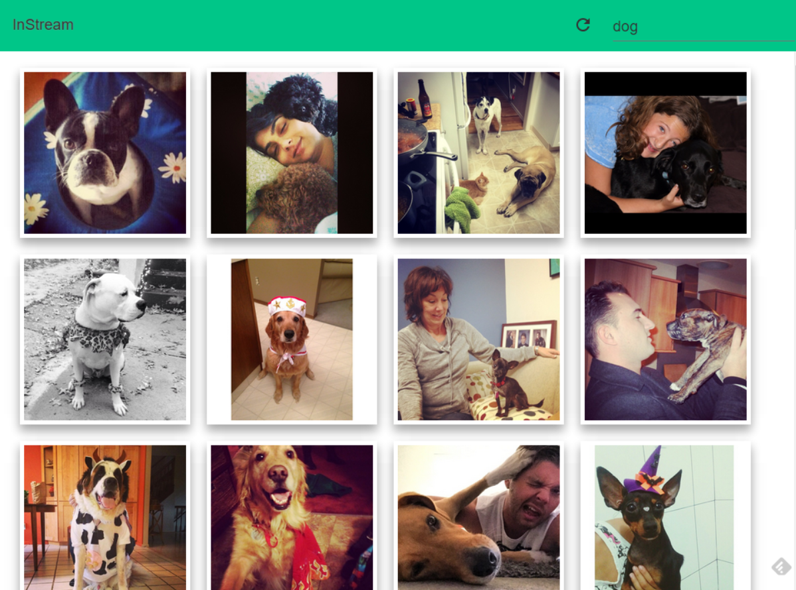
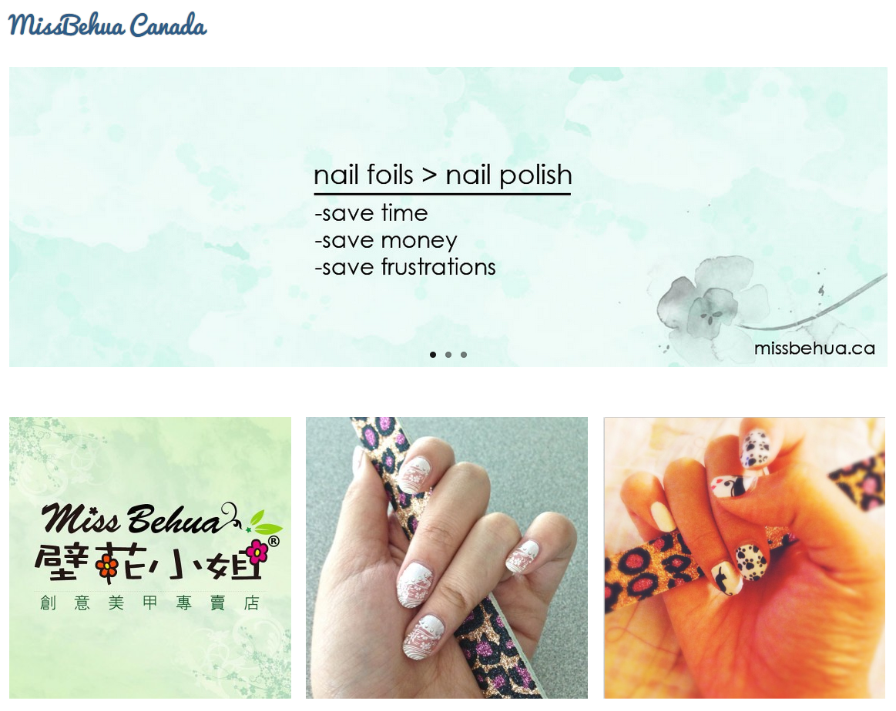
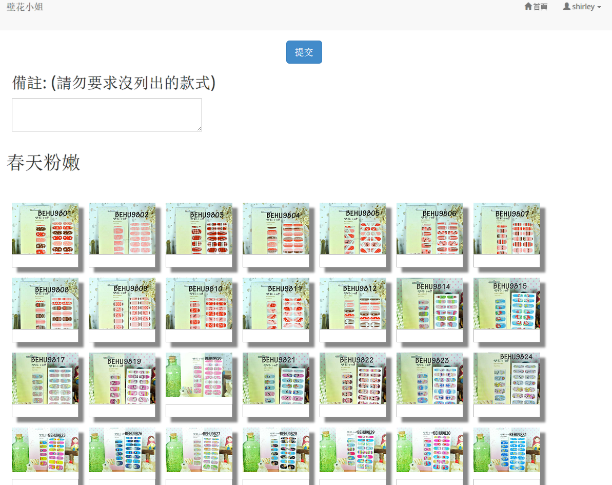

My Projects
InStream
Grab Instagram photos in response to user's search and
display in a beautiful polymer grid layout
MissBehuaCa
An e-commerce website made using WordPress and PHP
Ordering System
An online ordering system and platform between HQ and distributors

InStream was a side-project created by my friend and I for entering Vancouver UX Competition 2014. The core feature is for the users to search for popular keywords or popular events and InStream will grab the Instagram feeds that are tagged by those keywords and present these photos in photo wall grid-like layout. We used AJAX to communicate with Instagram API to acquire the JSON file. Having wanted to try different technology, we implemented Polymer, which makes everything into component for the ease of adding desired objects. This included the topbar that stays on the top for people to access quickly; the shadow to make the photos become the main subject rather than blending into the background. Also, knowing many people use mobile devices, we have also optimize our website to be mobile compatible. I am mostly in charge of the front end using jQuery and Polymer and to present the easiest user interface and gives the best user experience.
Project Dates: October 2014
Website: InStream
Project Dates: October 2014
Website: InStream

Using WordPress, this project was able to be set up swiftly and implemented pages and products very quickly without writing too much codes. I applied child theme so whenever the theme get updated in the future, my preferences will not be lost. Having the idea of homepage being the door and the first impression to the customers, making designing for the homepage becomes crucial to catch customers' attentions. I have put 80% of my effort into making my homepage to look colorful but yet simple. The homepage contained not only the categories of the product but also the photos from Instagram feeds. Moreover, by using PHP, I could tweak the downloaded plugins to perform the way I would like it to be.
Project Dates: August 2014 ~ October 2014
Website: http://missbehua.ca
Project Dates: August 2014 ~ October 2014
Website: http://missbehua.ca

MissBehua is a beauty store that sells nail foils and they are in need of a way for the distributors to order products from them. Using PHP, we could set up a simple backend that included a database for storing browser sessions and users. By using Masonri JavaScript plugin, we could show all the images of products in a waterfall grid layout that was able to adjust itself depending screen sizes plus users could tap on the photo and see a bigger version through the implementation of LightBox. After users put the number in the text boxes at the bottom of every image, pressing submit button would email the order to the company. This was done through PHP which composed the email in HTML and it was able to send email using the email that already existed on the server since users weren't required to input their own emails.
Project Dates: June 2014 ~ August 2014
Website: Not Available for Public
Project Dates: June 2014 ~ August 2014
Website: Not Available for Public
Know More About Me
Here is my resume

I hope you enjoy your stay and if you don't mind working with somebody that is both fun and hard-working (cough ME cough cough), contact me if you'd like. XD